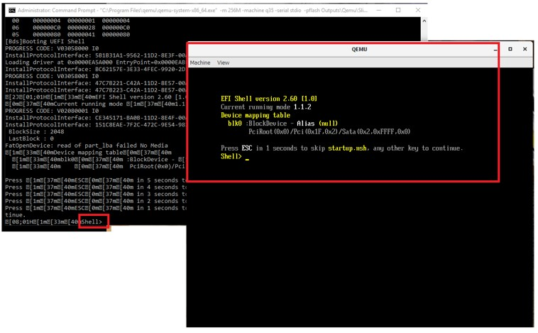

Exercise \- UEFI Payload
Note
In this exercise, we’ll learn how to build SlimBootloader with specific payload.
You can execute SBL with the following steps:
Rebuild SBL with specific payload, append the following line into file
<sbl_tree>\Platform/QemuBoardPkg/CfgData/CfgDataExt_Brd1.dltGEN_CFG_DATA.PayloadId | 'UEFI'
Rebuild SBL by using the following command:
python BuildLoader.py build qemu -p "OsLoader.efi:LLDR:Lz4;UefiPld.fd:UEFI:Lzma"
Completion: you will see
Done [qemu]on the screen after compile completedExecute SBL on QEMU by using the following command:
Windows:
"C:\Program Files\qemu\qemu-system-x86_64.exe" -m 256M -machine q35 -serial stdio -pflash Outputs\qemu\SlimBootloader.bin -drive id=mydisk,if=none,file=..\Misc\QemuImg\QemuSata.img,format=raw -device ide-hd,drive=mydisk -boot order=dLinux:
qemu-system-x86_64 -m 256M -machine q35 -serial mon:stdio -nographic -pflash Outputs/qemu/SlimBootloader.bin -drive id=mydisk,if=none,file=../Misc/QemuImg/QemuSata.img,format=raw -device ide-hd,drive=mydisk -boot order=d
Boot to UEFI Shell on graphics console

Note
\- Multiple payloads can be supported.
\- FirmwareUpdate and OsLoader are the default embedded payloads.
\- UEFI payload is a separate payload (Same as coreboot UEFI payload)